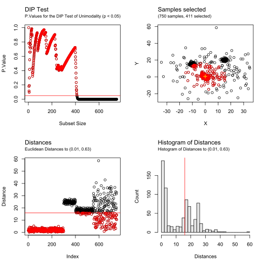
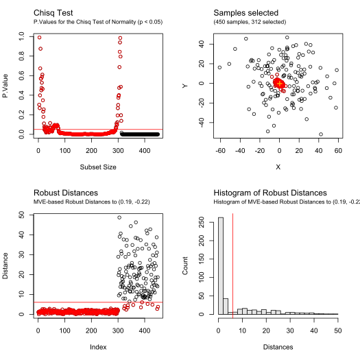

R/filter_outliers.R
filter_outliers.RdRecursive outlier filtering based on unimodality and multinormality tests
filter_outliers( data, center, test = "Mardia", threshold = 0.05, distType, trimmedPerIteration = 1, debug = FALSE, warnings = FALSE )
| data | Matrix or Data-Frame of numerical values containing the observations (rows correspond to observations, columns to variables) |
|---|---|
| center | Coordinates used to computes the distances of the samples and order them (array of numerical two values, for X and Y) |
| test | Statistical test to use. Valid options are "DIP" for unimodality test, "Mardia", "Kurtosis", "Skewness", "KS", "KS-adj", "Shapiro", "Lillie", and "Chisq" for multivariate normality test, or a or a user-defined function (see details below) |
| threshold | Threshold of significance for the statistical test (between 0 and 1, default: 0.05) |
| distType | Distance metric used to order the samples. Valid options are "Euclidean", "MCD", "MVE", and "OGK". If empty or NULL, "Euclidean" will be automatically selected for unimodality tests, and "MCD" for normality tests |
| trimmedPerIteration | Number of samples trimmed at each iteration (positive integer, default: 1) |
| debug | Logical value. |
| warnings | Logical value, to display the warnings and errors caught |
The function returns an S3 object of type BRIC.Filtering containing
the following values:
callParameters of the call (contains
data, test, testType, center, threshold, trimmedPerIteration
and distType)
distancesDistances of each sample from data to
the center provided
p.valuesP.Values of the test at each iteration
index.p.valuesSubset size corresponding to each P.Value, for plotting purpose
selectedIndices of the samples
from data selected at the end of the filtering
cutoffDistanceDistance of the furthest inlier selected
For unimodality tests parameter distType should be set to
"Euclidean" (as the distribution might contains a large amount of
outliers). For normality tests robust distances are preferable, using a
robust estimate estimates of location and scatter ("MCD","MVE", or "OGK")
For user-defined functions, the function should output the p.value of the test (between 0 and 1), and receive the 3 following arguments:
data - the matrix of observations
center - estimate of the center of the observations
distances - distances from each observations to the center
(based on distType metric)
Adrien Brilhault, Sergio Neuenschwander, and Ricardo Rios - A New Robust Multivariate Mode Estimator for Eye-tracking Calibration - Behavior Research Methods, 2022 - rdcu.be/cI9Pf
plot.BRIC.Filtering(), print.BRIC.Filtering(), clustBRIC(),
median_rec(), median_mv(), depth_values()
## Example 1 # Illustrative data data <- rbind( mvtnorm::rmvnorm(300, c(0, 0), diag(2) * 3 - 1), mvtnorm::rmvnorm(100, c(15, 20), diag(2)), mvtnorm::rmvnorm(150, c(-10, 15), diag(2) * 2 - 0.5), mvtnorm::rmvnorm(200, c(5, 5), diag(2) * 200) ) # Compute an estimate for the center center <- median_rec(data)$median # Remove non unimodal outliers from this location filtering <- filter_outliers(data, center, test = "DIP", debug = TRUE) print(filtering, maxDisplayed = 200)#> #> => Results for filter_outlier() using DIP Unimodality Test (p.value > 0.05) and Euclidean Distances #> 750 samples: 405 selected, 345 filtered (1 trimmed per iteration) #> #> Selected indices: #> [1] 187 234 191 66 36 242 4 173 217 128 214 131 136 25 74 261 53 176 #> [19] 295 179 100 27 147 31 15 45 14 298 109 123 69 34 159 41 276 250 #> [37] 266 224 55 282 51 65 290 216 288 13 284 70 103 96 166 19 8 156 #> [55] 259 2 283 121 88 138 112 76 246 151 163 572 236 110 199 223 231 198 #> [73] 81 132 748 12 115 165 204 114 122 85 279 40 238 299 38 50 258 208 #> [91] 296 105 184 29 161 180 60 150 230 268 26 71 6 240 272 181 228 253 #> [109] 18 72 177 155 54 107 143 293 24 80 78 247 225 196 154 169 265 16 #> [127] 102 604 67 193 286 281 160 68 190 189 221 133 3 264 75 210 167 585 #> [145] 124 44 738 195 97 48 157 271 251 220 125 111 273 174 212 99 140 292 #> [163] 275 197 274 61 142 58 233 116 46 87 90 52 168 30 141 263 194 713 #> [181] 73 1 170 91 57 98 285 260 685 200 249 144 213 183 186 93 126 117 #> [199] 113 37 #> ... (205 hidden) #> #> DIP Test p.values: #> [1] 0 0 0 0 0 0 0 0 0 0 0 0 0 0 0 0 0 0 0 0 0 0 0 0 0 0 0 0 0 0 0 0 0 0 0 0 0 #> [38] 0 0 0 0 0 0 0 0 0 0 0 0 0 0 0 0 0 0 0 0 0 0 0 0 0 0 0 0 0 0 0 0 0 0 0 0 0 #> [75] 0 0 0 0 0 0 0 0 0 0 0 0 0 0 0 0 0 0 0 0 0 0 0 0 0 0 0 0 0 0 0 0 0 0 0 0 0 #> [112] 0 0 0 0 0 0 0 0 0 0 0 0 0 0 0 0 0 0 0 0 0 0 0 0 0 0 0 0 0 0 0 0 0 0 0 0 0 #> [149] 0 0 0 0 0 0 0 0 0 0 0 0 0 0 0 0 0 0 0 0 0 0 0 0 0 0 0 0 0 0 0 0 0 0 0 0 0 #> [186] 0 0 0 0 0 0 0 0 0 0 0 0 0 0 0 #> ... (548 hidden) #> #> Outliers cutoff distance from center (-0.408507995831005, 0.851843023747785): #> [1] 15.51274 #> #> #> Euclidean Distances: #> [1] 1.95742021 0.87559361 1.64849869 0.25129961 3.47055607 1.37542921 #> [7] 2.21764392 0.79983882 4.04671001 2.38429947 3.46500041 1.12153820 #> [13] 0.71042653 0.49533931 0.47522942 1.55183956 3.65053852 1.42315416 #> [19] 0.79953260 2.70073281 2.66596557 2.20771957 2.84012495 1.48358116 #> [25] 0.33593447 1.37212770 0.42404758 2.96553752 1.31032489 1.93121741 #> [31] 0.44738781 2.63200069 3.05207446 0.57901353 4.50999788 0.20657623 #> [37] 2.08703286 1.24643717 3.08114228 1.21859546 0.58861551 2.38746163 #> [43] 2.35365379 1.70267338 0.47893661 1.88151762 5.45685371 1.71509538 #> [49] 2.38354859 1.25188597 0.67402761 1.91485493 0.35679762 1.45345433 #> [55] 0.65339022 3.01386968 1.98433466 1.84553649 3.35013197 1.34984321 #> [61] 1.82782955 3.65355729 2.39625517 2.09087690 0.68128272 0.09151108 #> [67] 1.56743735 1.58845393 0.56816189 0.73712899 1.37499169 1.42735239 #> [73] 1.95287624 0.33953671 1.68352439 0.95495298 2.88051883 1.50212009 #> [79] 3.48187198 1.49407449 1.11527684 2.91300393 3.53982006 2.90149519 #> [85] 1.20662153 3.11330304 1.90694641 0.94706889 2.52398832 1.91101607 #> [91] 1.96941905 2.17263575 2.04700631 3.34888765 3.49260660 0.76461505 #> [97] 1.71242359 1.98689703 1.80320564 0.42338291 4.85437545 1.55205996 #> [103] 0.74985872 4.03033295 1.30617891 2.54322202 1.46082831 2.49470044 #> [109] 0.55950887 1.03868365 1.76292566 0.95489060 2.08310671 1.19572730 #> [115] 1.14571948 1.88144891 2.07306479 4.14925926 2.15368940 2.54035508 #> [121] 0.94542268 1.19990940 0.56495662 1.69479421 1.73681391 2.06133995 #> [127] 4.14141475 0.26759716 2.47635551 4.06376712 0.32628640 1.11537217 #> [133] 1.63717778 3.56320915 2.21744064 0.33159562 2.18235838 0.94780085 #> [139] 2.69721899 1.80498497 1.93670328 1.83890593 1.46718827 2.03711722 #> [145] 2.72570834 3.38120379 0.43542308 2.29012726 3.09979972 1.35600735 #> [151] 0.99068465 3.20445073 2.12460816 1.54293563 1.44424322 0.81814309 #> [157] 1.71515791 2.38872579 0.58697586 1.58684694 1.31073862 2.95475726 #> [163] 0.99608650 2.64937358 1.16458949 0.79534450 1.69051984 1.92197636 #> [169] 1.54461583 1.96245933 3.34588002 2.83055133 0.25554036 1.77634601 #> [175] 4.45621647 0.36379857 1.44373940 4.82197610 0.41245686 1.34320702 #> [181] 1.39897563 2.42908586 2.04276772 1.30838390 4.64710345 2.04366940 #> [187] 0.02666737 2.44874249 1.62937250 1.61658170 0.06021719 2.09900810 #> [193] 1.57917049 1.94600796 1.70639294 1.53810227 1.82436272 1.10127518 #> [199] 1.03978431 2.02286981 #> ... (550 hidden) #>## Example 2 # Illustrative data data <- rbind( mvtnorm::rmvnorm(300, c(0, 0), diag(2) * 4 - 1.5), mvtnorm::rmvnorm(150, c(5, 5), diag(2) * 400) ) # Compute an estimate for the center center <- median_rec(data)$median # Remove non normal outliers from this location filtering <- filter_outliers(data, center, test = "Chisq", distType = "MVE", debug = TRUE) print(filtering)#> #> => Results for filter_outlier() using Chisq Normality Test (p.value > 0.05) and MVE-based Robust Distances #> 450 samples: 313 selected, 137 filtered (1 trimmed per iteration) #> #> Selected indices: #> [1] 26 72 266 142 74 221 92 40 243 129 112 50 154 87 220 135 152 259 #> [19] 295 200 291 240 144 288 88 159 292 182 194 3 27 78 138 172 119 265 #> [37] 31 192 191 117 79 296 76 241 47 55 102 96 283 83 5 95 39 110 #> [55] 253 268 156 141 97 190 206 65 89 61 13 214 106 80 19 91 137 115 #> [73] 183 140 215 218 272 150 123 139 165 132 210 193 45 71 105 280 131 4 #> [91] 67 216 250 134 93 24 1 236 209 245 6 126 223 249 275 274 52 162 #> [109] 85 217 203 9 49 248 100 18 108 263 252 69 98 282 10 11 94 257 #> [127] 64 235 233 116 58 2 169 226 174 62 224 151 146 34 25 270 48 101 #> [145] 285 180 234 145 230 225 185 149 147 158 68 157 195 261 279 63 278 246 #> [163] 199 213 143 251 57 46 44 161 170 188 181 53 228 287 276 109 260 84 #> [181] 208 284 17 207 136 196 175 264 202 21 163 176 122 212 256 37 99 111 #> [199] 113 293 #> ... (113 hidden) #> #> CHISQ Test p.values: #> [1] 0.000000e+00 0.000000e+00 0.000000e+00 0.000000e+00 0.000000e+00 #> [6] 0.000000e+00 0.000000e+00 0.000000e+00 0.000000e+00 0.000000e+00 #> [11] 0.000000e+00 0.000000e+00 0.000000e+00 0.000000e+00 0.000000e+00 #> [16] 0.000000e+00 0.000000e+00 0.000000e+00 0.000000e+00 0.000000e+00 #> [21] 0.000000e+00 0.000000e+00 0.000000e+00 0.000000e+00 0.000000e+00 #> [26] 0.000000e+00 0.000000e+00 0.000000e+00 0.000000e+00 0.000000e+00 #> [31] 0.000000e+00 0.000000e+00 0.000000e+00 0.000000e+00 0.000000e+00 #> [36] 0.000000e+00 0.000000e+00 0.000000e+00 0.000000e+00 0.000000e+00 #> [41] 0.000000e+00 0.000000e+00 0.000000e+00 0.000000e+00 0.000000e+00 #> [46] 0.000000e+00 0.000000e+00 0.000000e+00 0.000000e+00 0.000000e+00 #> [51] 0.000000e+00 0.000000e+00 0.000000e+00 0.000000e+00 0.000000e+00 #> [56] 0.000000e+00 0.000000e+00 0.000000e+00 0.000000e+00 0.000000e+00 #> [61] 0.000000e+00 0.000000e+00 0.000000e+00 0.000000e+00 0.000000e+00 #> [66] 0.000000e+00 0.000000e+00 0.000000e+00 0.000000e+00 0.000000e+00 #> [71] 0.000000e+00 0.000000e+00 0.000000e+00 0.000000e+00 0.000000e+00 #> [76] 0.000000e+00 0.000000e+00 0.000000e+00 0.000000e+00 0.000000e+00 #> [81] 0.000000e+00 0.000000e+00 0.000000e+00 0.000000e+00 0.000000e+00 #> [86] 0.000000e+00 0.000000e+00 0.000000e+00 0.000000e+00 0.000000e+00 #> [91] 0.000000e+00 0.000000e+00 0.000000e+00 0.000000e+00 0.000000e+00 #> [96] 0.000000e+00 0.000000e+00 0.000000e+00 0.000000e+00 0.000000e+00 #> [101] 0.000000e+00 0.000000e+00 0.000000e+00 0.000000e+00 0.000000e+00 #> [106] 0.000000e+00 0.000000e+00 0.000000e+00 0.000000e+00 0.000000e+00 #> [111] 0.000000e+00 0.000000e+00 0.000000e+00 0.000000e+00 0.000000e+00 #> [116] 0.000000e+00 0.000000e+00 0.000000e+00 0.000000e+00 0.000000e+00 #> [121] 0.000000e+00 0.000000e+00 0.000000e+00 0.000000e+00 0.000000e+00 #> [126] 0.000000e+00 0.000000e+00 4.440892e-16 1.654232e-14 1.312617e-12 #> [131] 1.242060e-10 2.218907e-08 9.084903e-07 2.775114e-05 6.825330e-04 #> [136] 4.672541e-03 2.011935e-02 1.556376e-01 4.167108e-01 5.068963e-01 #> [141] 4.953652e-01 7.338530e-01 9.273769e-01 7.716380e-01 5.862066e-01 #> [146] 4.535362e-01 3.294326e-01 2.802889e-01 2.755570e-01 2.752922e-01 #> [151] 3.091032e-01 2.419613e-01 2.420461e-01 1.773616e-01 1.517810e-01 #> [156] 1.425608e-01 1.534330e-01 1.425883e-01 1.243414e-01 1.186502e-01 #> [161] 1.197157e-01 1.231936e-01 1.129893e-01 1.166158e-01 9.405258e-02 #> [166] 9.643965e-02 9.138212e-02 1.001432e-01 1.116800e-01 8.832414e-02 #> [171] 9.781751e-02 9.563380e-02 7.740355e-02 5.595221e-02 6.619494e-02 #> [176] 6.796060e-02 7.339262e-02 7.610875e-02 5.515173e-02 4.305593e-02 #> [181] 5.438344e-02 5.650524e-02 4.587854e-02 3.880623e-02 2.803080e-02 #> [186] 3.292406e-02 2.675797e-02 3.466729e-02 2.645091e-02 1.806739e-02 #> [191] 1.259853e-02 1.606685e-02 1.631250e-02 1.882320e-02 2.043259e-02 #> [196] 2.579293e-02 2.519709e-02 2.777737e-02 2.187937e-02 2.754154e-02 #> ... (248 hidden) #> #> Outliers cutoff distance from center (-0.119527849792769, 0.0971060080468664): #> [1] 5.616531 #> #> #> MVE-based Robust Distances: #> [1] 0.91017862 1.09809797 0.44837490 0.84787360 0.62256021 0.93450886 #> [7] 1.91667154 1.63419288 0.97883808 1.06044792 1.06342634 1.82565820 #> [13] 0.72460805 1.94052357 2.18831061 1.73746819 1.42758453 1.00787755 #> [19] 0.73933467 1.75859054 1.46367004 2.36518287 1.58988912 0.90657886 #> [25] 1.14275951 0.04744185 0.46708079 1.99467991 1.61206951 1.55093781 #> [31] 0.52480898 1.69447410 1.57535897 1.14180595 1.64814962 1.75467598 #> [37] 1.49925880 2.23595089 0.64043319 0.16846168 2.30436881 2.42545282 #> [43] 2.18542754 1.30113054 0.80834313 1.29975488 0.55249184 1.14433496 #> [49] 0.98760445 0.28001192 1.98069908 0.95517589 1.32216925 1.80544593 #> [55] 0.56154287 1.89215049 1.29617238 1.09273962 2.75174026 2.00988494 #> [61] 0.72383466 1.12330109 1.24721143 1.06751592 0.71470652 1.76861487 #> [67] 0.87350640 1.20241289 1.03600858 1.67024386 0.82178710 0.05711440 #> [73] 1.56721127 0.11718225 1.70919497 0.54489173 2.09063897 0.47679385 #> [79] 0.53877525 0.73880401 1.89798932 1.71505110 0.60783246 1.38111371 #> [85] 0.97088694 1.58392915 0.29538124 0.38138152 0.71966120 2.61169890 #> [91] 0.74006214 0.14624145 0.90175112 1.06643455 0.63215348 0.57378423 #> [97] 0.69398082 1.04155703 1.50884055 1.00419310 1.14540322 0.56388571 #> [103] 1.87087355 1.83011570 0.83480540 0.73154135 1.57114641 1.00835146 #> [109] 1.36246388 0.64489631 1.51140514 0.26841647 1.51175932 2.68067931 #> [115] 0.75528276 1.08656682 0.53038120 2.74838290 0.49993420 2.00409391 #> [121] 2.44113665 1.48034833 0.79589268 1.84878081 1.81425303 0.93519637 #> [127] 2.30270756 2.10590855 0.21781636 1.97497596 0.84731779 0.80408370 #> [133] 2.05881045 0.89351088 0.31268412 1.43862381 0.74737999 0.49635888 #> [139] 0.79846640 0.76426410 0.67755844 0.09538378 1.28694623 0.35827770 #> [145] 1.15524205 1.13875745 1.19132290 1.56693287 1.17503400 0.79261437 #> [151] 1.12797561 0.31406843 1.88327616 0.29154498 2.31008116 0.66734953 #> [157] 1.20672756 1.19805725 0.39003583 1.55382642 1.30164283 0.95543601 #> [163] 1.46495430 1.87121876 0.80263325 1.96172565 1.90215058 1.70108862 #> [169] 1.10382246 1.31584749 1.92902736 0.49811635 1.87471801 1.11238685 #> [175] 1.44424687 1.46682041 1.57457634 2.57904797 1.53002380 1.15132826 #> [181] 1.32111462 0.41923444 0.76333646 2.17748292 1.17334426 1.56112389 #> [187] 2.03442068 1.31935495 1.62285859 0.70125466 0.52835396 0.52569876 #> [193] 0.80722448 0.44291845 1.21980202 1.44388503 2.21136842 1.69089293 #> [199] 1.28334160 0.34687239 #> ... (250 hidden) #>## Examples of user-defined tests if (FALSE) { customTest1 <- function(data, center, distances) { return(diptest::dip.test(distances)$p.value) } filter_outliers(data, center, test = customTest1, distType = "Euclidean", debug = TRUE, warnings = TRUE) customTest2 <- function(data, center, ...) { return(stats::ks.test(stats::mahalanobis(data, center, stats::cov(data), tol = 1e-8), "pchisq", df = ncol(data))$p.value) } filtering <- filter_outliers(data, center, distType = "Euclidean", test = customTest2, debug = TRUE, warnings = TRUE) customTest3 <- function(data, ...) { return(ICS::mvnorm.skew.test(data)$p.value) } filtering <- filter_outliers(data, center, distType = "Euclidean", test = customTest3, threshold = 0.1, debug = TRUE) }